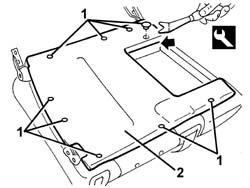
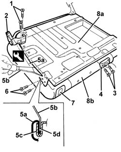
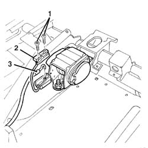
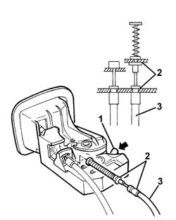
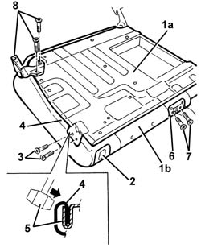

7065B26 cable for attaching releasing rear central seat belt reel r r
- Path
- Procedures > 70 FITTINGS > 7065 SEAT BELTS AND ACCESSORIES > 7065B rear safety belts > 7065B26 cable for attaching releasing rear central seat belt reel r r
- Kind
- repair procedure (removal / refitting; the operation number is the code)
- Applies to
- all engines; all production periods
- Interactive page
- https://sloeber94.github.io/elrnDB-a156/en/#/3238979
Applies to: all engines; all production periods; only with equipment: Station Wagon and Rear seat with central winder
 Removing
Removing
 Refitting
Refitting7040B28 PET transport PROTECTION and load carrying compartment COVER COMBINATION BLIND - R.R.
7040B10 load platform (luggage platform) trim - r+r
7050A13 SPLIT rear. seat LEFT BACKREST- R.R.
7050A15 SPLIT rear. seat RIGHT BACKREST- R.R.
7050B18 rear seat arm rest - r+r
7050B10 l/h or r/h head restraint (one) of rear seat - r+r
7050B30 rear seat central armest r r
7050A78 ski flap in rear seat squab rr
1. Release the retaining buttons using the special tool.
 | Name | Country |
|---|---|---|
1 | Scraper blade | 1.823.015.000 |
2. Remove the rear cover.

Applies to: all engines; all production periods; only with equipment: Station Wagon and Rear seat with central winder
1. Unscrew the bolts
2. Remove the squab moutning bracket.
3. Unscrew the bolts
4. Remove the trim, disconnecting it from the seat belt.
5. Remove the entire cover surround (5a), using the special tool. Use the special tool (5b) to open the groove (5c) and disengage the cover profile (5d).
| Name | Country |
|---|---|---|
5b | Scraper blade | 1.823.014.000 |
6. Unscrew the catch retaining bolts.
7. Disconnect the cover from the catch.
8. Detach the frame (8a) from the cover with padding (8b).

Applies to: all engines; all production periods; only with equipment: Station Wagon and Rear seat with central winder
1. Tilt the squab frame and undo the cover piece fixing bolts.
2. Remove the cover.
3. Disconnect the belt release control cable.

Applies to: all engines; all production periods; only with equipment: Station Wagon and Rear seat with central winder
1. Manually re-engage the lock.
2. Disconnect the winder control cable from the retainers.
3. Recover the reel control cable.

Applies to: all engines; all production periods; only with equipment: Station Wagon and Rear seat with central winder
Refitting
RemovingCheck that the reel control cable is undamaged.
Connect the winder control cable to the engagement device retainers.
Connect the reel control cable.
Position the cover piece and fix it with the bolts.
1. Position the cover with padding (1b) on the frame (1a).
2. Insert the lock barrel in its seating on the cover.
3. Tighten the catch retaining bolts.
4. Fit the cover along the whole perimeter.
5. Beat in the groove using a rubber hammer.
Mould the squab cover into shape.
6. Connect the trim to the seat belt.
7. Tighten the screws.
8. Fit the squab mounting bracket in position and fix it with the bolts.

Applies to: all engines; all production periods; only with equipment: Station Wagon and Rear seat with central winder
Position the rear cover and fix it with the retaining buttons.
7050A78 ski flap in rear seat squab rr
7050B30 rear seat central armest r r
7050B10 l/h or r/h head restraint (one) of rear seat - r+r
7050B18 rear seat arm rest - r+r
7050A15 SPLIT rear. seat RIGHT BACKREST- R.R.
7050A13 SPLIT rear. seat LEFT BACKREST- R.R.
7040B10 load platform (luggage platform) trim - r+r
7040B28 PET transport PROTECTION and load carrying compartment COVER COMBINATION BLIND - R.R.
Topics linked from this page (8)
- 7040B10 load platform (luggage platform) trim - r+r
- 7040B28 PET transport PROTECTION and load carrying compartment COVER COMBINATION BLIND - R.R.
- 7050A13 SPLIT rear. seat LEFT BACKREST- R.R.
- 7050A15 SPLIT rear. seat RIGHT BACKREST- R.R.
- 7050A78 ski flap in rear seat squab rr
- 7050B10 l/h or r/h head restraint (one) of rear seat - r+r
- 7050B18 rear seat arm rest - r+r
- 7050B30 rear seat central armest r r